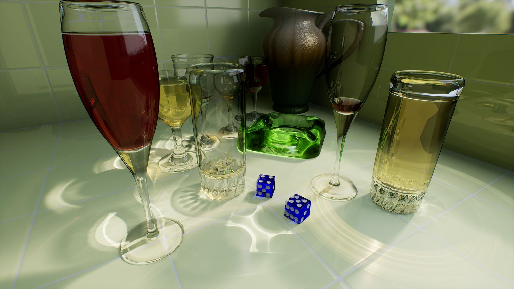
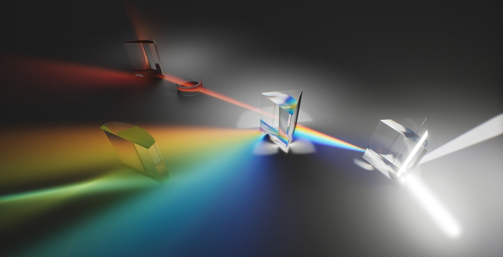
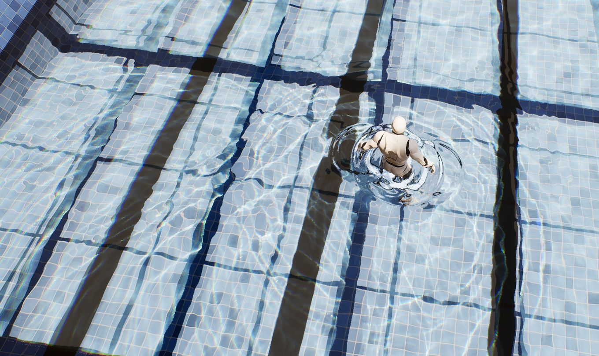
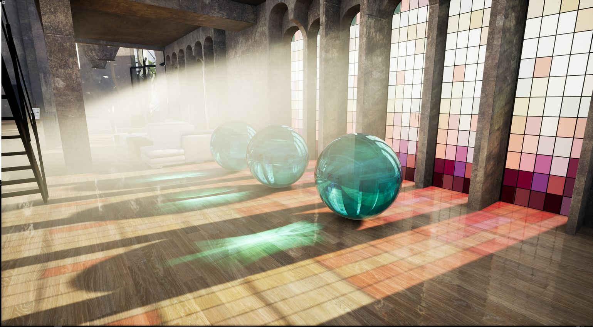

光线追踪半透明和焦散
混合半透明允许光栅化半透明和光线追踪半透明共存。推荐的高质量设置是 r.RayTracing.Translucency 3 加上吸收。网格焦散和水焦散是独立的系统，分别通过 r.RayTracing.MeshCaustics.Enable 和 r.RayTracing.WaterCaustics.Type 启用。
这些特性源自 NVIDIA 的 NvRTX 4.27 焦散分支，Vite 正是基于此分支。它们是渲染器中参数最多的部分，因此本页以参考文档的形式呈现，而非叙述。
警告： 本页所有内容均在默认版本中编译完成。当 VITE_RT_PSO_DEBLOAT 设置为 1（默认值）时，光线追踪半透明、网格焦散和水焦散的着色器变体将被移除。它们的控制台变量将成功设置，但不会渲染任何内容。要使用这些特效，请使用 VITE_RT_PSO_DEBLOAT=0 重新编译。请参阅编译时开关。
这些是光线追踪套件中最耗费资源的特效，在 4K 分辨率下，它们都无法满足 Vite 的性能目标。此处记录这些特效是因为 NvRTX 系列提供了这些特效，并且某些项目会在过场动画、宣传素材或特定场景中使用它们。
注意： 所有从 NvRTX Caustics 分支继承的 RTX 特性代码和美术资源均受 GameWorks 许可协议保护。
半透明模式
UE4 默认的光线追踪半透明效果会强制所有半透明效果都通过光线追踪管线实现，这会导致不支持的图元类型（例如级联粒子）消失，并且产生的折射行为与为光栅化而制作的内容交互起来不直观。混合半透明可以解决这个问题。
r.RayTracing.Translucency |
模式 |
|---|---|
0 |
UE4 原生光线追踪半透明关闭 |
1 |
UE4 原生光线追踪半透明开启 |
2 |
混合半透明 1 — 仅光线追踪半透明反射 |
3 |
混合半透明 2 — 光线追踪半透明反射和折射 |
混合模式需要在项目设置中勾选混合半透明复选框，因为它们会改变基础半透明着色器。相应的着色器支持开关是 r.RayTracing.HybridTranslucencySupport。
模式 2 — 仅反射
将多层半透明效果追踪到屏幕外表面，然后将其合成为普通光栅半透明效果的一部分。与完全光线追踪的半透明效果相比，它会损失与顺序无关的透明度和折射效果，但在提供光线追踪反射和着色的同时，这些方面并不逊色于光栅模式。
| 控制台变量 | 用途 |
|---|---|
r.RayTracing.Translucency.HybridLayers |
追踪多少个重叠的光线追踪半透明层 |
r.RayTracing.Translucency.HybridDepthThreshold |
几何体被视为不同半透明层的世界空间分离阈值。阈值过小，混合半透明效果将不会显示，或者会出现 Z 冲突伪影；阈值过大，堆叠的层会错误地合并。 |
r.RayTracing.Translucency.HalfRes |
0 全透明，1 垂直半透明（交错），2 半棋盘格（四点），3 半棋盘格（垂直两点） |
模式 3 — 反射和折射
混合了光栅化和完全光线追踪的半透明效果，包括反射、折射和 OIT 支持。级联粒子可以与光线追踪半透明效果共存，而不会损失其优势。此模式下，与顺序无关的透明度是自动的。
这是半透明网格的推荐模式，建议与吸收效果结合使用。
推荐设置以获得最佳视觉效果：
r.RayTracing.Translucency.Refraction 1
r.RayTracing.Translucency.HybridLayers 5
r.RayTracing.Translucency.MaxRefractionRays 5
在 4.27 版本中，当在模式 3 下启用 RT 折射时，每个材质的折射率 (IOR) 将绑定到基于 PBR 的折射率输入；材质的“折射模式”输入必须设置为“折射率（Index Of Refraction）”。
模式 3 还允许您为每个网格选择半透明静态网格是否参与光线追踪。不参与光线追踪的网格将通过光栅化渲染，这允许您在同一场景中混合使用光线追踪和光栅化的半透明效果，并通过减少光线追踪管线的工作负载来提高性能。
模式 3 的补充说明：
r.RayTracing.Translucency.HybridDepthThreshold不适用。在确定图层顺序时，请使用r.RayTracing.Translucency.PrimaryRayBias来调整深度。- 当 Cascade 和 Niagara 发射器生成的不透明网格被光线追踪生成的半透明网格完全遮挡时，这些不透明网格可能会消失，因为某些粒子类型无法生成光线追踪硬件所需的 BVH 数据。这是 UE4 的一个已知特性，混合模式 2 不会改变这一点。
- 半分辨率折射可通过
r.RayTracing.Translucency.HalfRes实现：0 为全分辨率折射，1 为加权颜色重建的半棋盘格折射，2 为帧间半棋盘格折射，3 为平均颜色重建的半棋盘格折射。这些重建技术旨在用于 TAA 抗锯齿，在 DLSS 下需要仔细调整，因为 DLSS 会放大像素级重建伪影。
半透明吸收
启用吸收后，由相同材质制成的较厚物体看起来透明度较低，这符合物理规律，并且在玻璃和液体材质的渲染上能显著提升保真度。吸收是针对特定材质的选项，因此启用和禁用吸收的物体会同时渲染。
启用半透明吸收
-
确保已启用光线追踪半透明。
-
将
r.RayTracing.Translucency.EnableAbsorption设置为 1，或在后处理体积中选中启用吸收（Enable Absorption）。 -
在材质编辑器中，为每个需要使用吸收的材质选中光线追踪半透明吸收（Ray Traced Translucency Absorption）。
吞吐量剔除通过丢弃低贡献度的光线路径来降低渲染成本：
| 控制台变量 | 用途 |
|---|---|
r.RayTracing.Translucency.MinRefractionThroughput |
值越高，剔除的折射光线越多。可能会产生瑕疵。 |
r.RayTracing.Translucency.MinReflectionThroughput |
值越高，剔除的反射光线越多。可能会产生瑕疵。 |
r.RayTracing.PrimaryRays.AbsorptionForceShadingOnOpaqueObjects |
设置为 1 可消除 Actor 遮挡背景时透明反射产生的双重着色瑕疵。 |
主光线景深
光栅化景深处理半透明效果不佳，尤其是在级联粒子与半透明玻璃相交时。光线追踪可以实现精确的影视级景深。
启用光线追踪景深
-
使用电影摄影机并按常规方式应用景深。
-
收集摄影机视锥体内的所有半透明材质，包括半透明粒子。对于每个根材质，选中输出半透明深度（Output Translucency Depth），并确保半透明深度不透明度阈值（Translucency Depth Opacity Threshold）低于材质实例的不透明度参数。
-
设置
r.RayTracing.PrimaryRays.IncludeDOF为 1。
强烈建议同时启用增强型半透明模式 3、光线追踪半透明反射和折射以及半透明吸收，并配合光线追踪景深使用。DLSS 会自动支持。
网格焦散
为半透明和金属物体渲染交互式焦散效果。支持所有四种 UE4 光照类型、多个光源、反射和折射焦散、色散和柔和焦散。

POV-Ray 眼镜场景，光线追踪折射焦散投射到瓷砖表面上。瓷砖上的每一个明亮图案都是折射焦散线，是描摹出来的，而不是创作出来的。
棱镜通过光线追踪色散将白光束分解成光谱。需要材质根节点中光线追踪焦散色散量大于 0，并且r.RayTracing.MeshCaustics.EnableDispersion 1。
启用网格焦散
-
启用光线追踪。
-
在后处理体积的光线追踪网格焦散（Ray Tracing Mesh Caustics）下选中已启用（Enabled ），或设置
r.RayTracing.MeshCaustics.Enable 1。 -
在灯光属性中，选中投射网格焦散（Cast Mesh Caustics）。
-
对于金属材质，选中投射光线追踪反射焦散（Cast Ray Traced Reflection Caustics）。对于半透明物体，选中 投射光线追踪反射焦散（Cast Ray Traced Reflection Caustics）以启用反射焦散，选中投射光线追踪折射焦散（Cast Ray Traced Refraction Caustics）以启用折射焦散。
功能设置
当控制台变量设置为 -1 时，后处理体积控制其实际值。
| 控制台变量 | 用途 |
|---|---|
r.RayTracing.MeshCaustics.EnableTranslucentReflection |
为透明物体启用反射焦散 |
r.RayTracing.MeshCaustics.TranslucentReflectionMode |
0 仅折射，1 折射加反射（第一次反弹），2 任意反弹次数均反射 |
r.RayTracing.MeshCaustics.EnableDispersion |
启用散射。需要材质根节点中光线追踪焦散散射量（Ray Traced Caustics Dispersion Amount）大于 0。 |
r.RayTracing.MeshCaustics.DispersionSamples |
用于散射的颜色样本 |
r.RayTracing.MeshCaustics.SoftCausticsSample |
软焦散的样本数量。需要光照设置中网格焦散柔和度（Mesh Caustics Softness）大于 0。 |
r.RayTracing.MeshCaustics.EnableAdvancedSoftCaustics |
更高质量的软焦散算法 |
要显示每个材质实例的色散量，请勾选光线追踪焦散使用自定义数据 0 作为色散量（Ray Traced Caustics Use CustomData 0 As Dispersion Amount），并将一个标量连接到“自定义数据 0”通道，这样就可以在运行时调整该参数。
性能调优
性能的关键在于限制光子数量。将视图模式设置为光线追踪调试→网格焦散调试数据（Ray Tracing Debug → Mesh Caustics Debug Data），然后将调试光照数据类型（Debug Light Data Type）设置为光子数量（Photon Count）。在典型情况下，大约 10 万个光子即可获得不错的效果。如果光子数量过高，请在后处理体积中增加自适应光子大小（Adaptive Photon Size）并降低自适应方差增益（Adaptive Variance Gain），同时提高最终剔除阈值（Final Cull Threshold）和中间剔除阈值（Mid Cull Threshold），直到焦散开始消失。
| 控制台变量 | 用途 |
|---|---|
r.RayTracing.MeshCaustics.FinalCullColorThreshold |
剔除低贡献度光线 |
r.RayTracing.MeshCaustics.MidCullColorThreshold |
剔除低贡献度光线 |
r.RayTracing.MeshCaustics.BufferScale |
-1 表示后处理体积，0 表示全分辨率，1 表示半分辨率，2 表示四分之一分辨率 |
r.RayTracing.MeshCaustics.AdaptivePhotonSize |
目标屏幕空间光子尺寸。尺寸越小，细节越丰富，但计算成本也越高。 |
r.RayTracing.MeshCaustics.AdaptiveVarianceGain |
更高的值可以抑制闪烁 |
r.RayTracing.MeshCaustics.EnableTemporalFilter |
启用时间滤波以减少闪烁 |
r.RayTracing.MeshCaustics.TemporalStrength |
更高的值可以提高稳定性，但可能会引入延迟或重影 |
r.RayTracing.MeshCaustics.MaxTraceDepth |
限制反弹次数；提高半透明物体的性能 |
水体焦散效果
为从池塘到开阔海域的各种水域渲染交互式焦散效果。支持所有四种光照类型、多光源、反射和折射焦散、色散、柔和焦散和级联焦散贴图。

游泳池场景，泳池底部被光线追踪技术营造出水波纹效果，一个角色正在搅动水面。采用单向光源照射。由于焦散效果是逐帧追踪水面网格生成的，因此会随着水面扰动而变化。启用水体焦散
-
启用光线追踪。
-
在后处理体积中选择水体焦散类型，或将
r.RayTracing.WaterCaustics.Type设置为 1 或 2。 -
在灯光属性中，选中投射水体焦散（Cast Water Caustics）。
-
在水面静态网格 Actor 上，在“光线追踪”选项卡下选中评估光线追踪水体焦散（Evaluate Ray Tracing Water Caustics）。水面材质必须使用半透明混合模式。
选择算法
光子差分散射（类型 1） 灵活，适用于 UE4 支持的所有光照类型。它需要相对高分辨率的焦散贴图才能生成清晰的图案，因此对于海洋和大型湖泊等大面积表面，建议同时启用级联焦散贴图。级联焦散贴图可以保持摄像机附近的焦散清晰，同时降低远处的渲染成本。
程序化焦散网格（类型 2） 即使使用相对低分辨率的贴图也能生成非常清晰的焦散。它不需要级联焦散贴图，因此不与级联焦散贴图一起使用。它通常比 PDS 更快，但不支持面光源，并且可能会在焦散接收器的边缘留下瑕疵。
设置
| 控制台变量 | 用途 |
|---|---|
r.RayTracing.WaterCaustics.MaxReflectionRayDistance |
设置为 0 可禁用反射焦散 |
r.RayTracing.WaterCaustics.MaxRefractionRayDistance |
设置为 0 可禁用折射焦散 |
r.RayTracing.WaterCaustics.MapCascades |
级联数量，最多 4 级。仅限类型 1。 |
r.RayTracing.WaterCaustics.MapSizeX / MapSizeY |
焦散贴图大小，默认值为 2048。对于小型池塘，1024 通常足够，并且可以显著提升性能。 |
r.RayTracing.WaterCaustics.NumDenoisePasses |
默认值为 2。减少到 0 可获得更锐利的效果。 |
r.RayTracing.WaterCaustics.UseSceneLightDir |
设置为 0 可从摄像机上方而非沿光照方向捕获焦散贴图。仅适用于平行光。 |
r.RayTracing.WaterCaustics.BufferScale |
1 表示全分辨率，2 表示半分辨率，4 表示四分之一分辨率 |
r.RayTracing.WaterCaustics.PhotonScale |
PDS 中的初始光子大小。默认值为 3。 |
r.RayTracing.WaterCaustics.ShowPhoton |
调试：将光子绘制为点 |
r.RayTracing.WaterCaustics.RefractBackFaceCullingThreshold |
设置为 -0.5 左右可忽略出现裂缝或接缝的表面法线 |
r.RayTracing.WaterCaustics.ReflectBackFaceCullingThreshold |
与上述相同，用于反射焦散。 |
将水体焦散限制在单个动态光源上可以显著提升性能；光源距离剔除和强度衰减功能完全受支持。
焦散焦点取决于网格和法线强度：较大的波浪或较强的法线贴图值会产生更显著的焦散效果。要启用分散效果，请在后期处理体积中增加分散强度（Dispersion Intensity）并调整分散偏移（Dispersion Offset）。
示例内容
NVIDIA 为以下功能提供了项目文件和打包演示：
特定场景：用于演示强折射的 POV-Ray 眼镜场景、棱镜分散演示、用于演示水体焦散的游泳池场景，以及混合了粒子、反射、折射、网格焦散和实时全局光照 (RTGI) 的办公室场景。另请参阅本手册中的废弃公寓和阁楼场景。

结合了体积光、半透明球体、光线追踪反射和折射的办公室场景，一次性运用了所有技术：粒子、半透明反射和折射、网格焦散和光线追踪全局光照都在单个帧中实现。